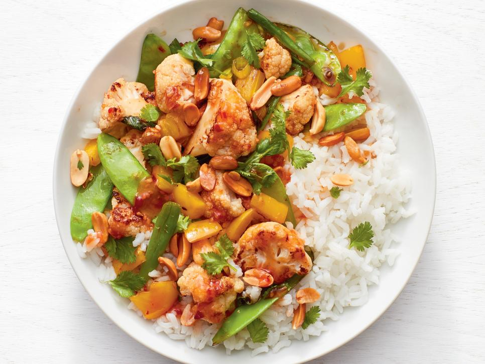

Chicken Stirfry

Ingredients
- 1 cup jasmine rice
- 1 head cauliflower cut
- 3 tbsp vegetable oil
- kosher salt and pepper
- 1/4 cup roasted peanuts
- 1 cup snow peas
- 1 yellow bell pepper
- 2 tbsp chopped ginger
- 3 scallions cut into 2-inch pieces
- 1 1/2 tsp low-sodium soy sauce
- 1/4 cup cilantro
Steps
- Preheat the broiler. Cook the rice as the label directs. Meanwhile, toss the cauliflower with 2 tablespoons vegetable oil and a generous pinch each of salt and pepper; spread on a rimmed baking sheet. Broil, stirring occasionally, until lightly charred and tender, about 10 minutes.
- Heat the remaining 1 tablespoon vegetable oil in a large nonstick skillet over high heat. Add the peanuts and cook, stirring, until lightly toasted, about 1 minute. Remove to a small bowl with a slotted spoon and season with salt and pepper.
- Add the snow peas, bell pepper and ginger to the skillet. Cook, stirring occasionally, until crisp-tender, 1 to 2 minutes. Add the scallions (white and green parts) and cauliflower; toss. Add the chili sauce and soy sauce and continue to cook, stirring often, until the vegetables are glazed, about 2 minutes.
- Fluff the rice with a fork; top each serving with the stir-fry, toasted peanuts and cilantro.
Other Recipes